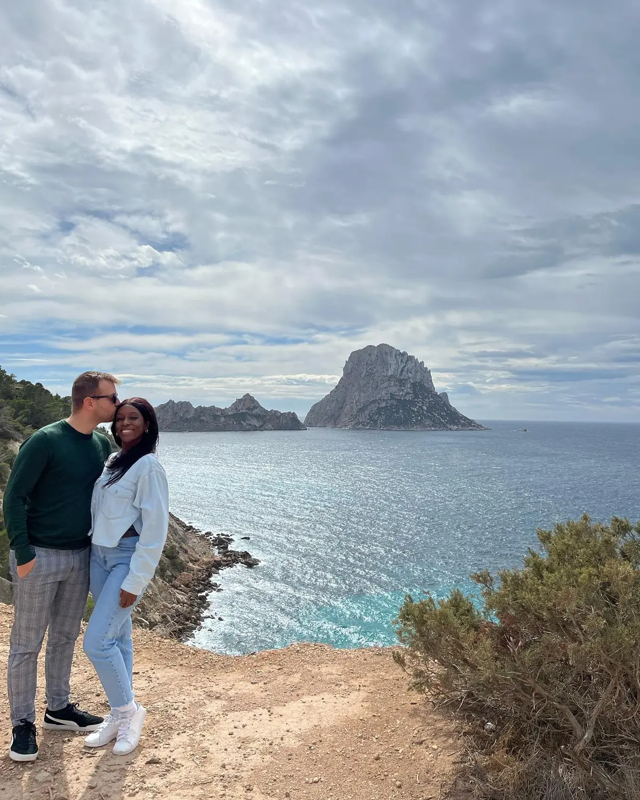

The icon01
Es Vedrà
📍 Ibiza's south-west coast
The mysterious rock island of Es Vedrà rises straight out of the sea off Ibiza's wild south-west coast, and the clifftop viewpoints looking out to it are pure magic — especially near sunset. It's an easy Vespa ride out, and one of the most beautiful, least "party" corners of the island.
Best at sunsetGo by Vespa